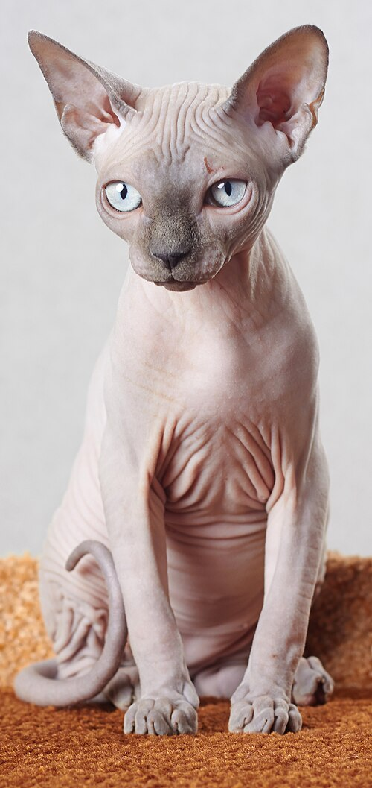

Sphynx cat
The Sphynx cat also known as the Canadian Sphynx, is a breed of cat known for its lack of fur. Hairlessness in cats is a naturally occurring genetic mutation, and the Sphynx was developed through selective breeding of these animals, starting in the 1960s.The skin has a texture of chamois leather, as it has fine hairs, or the cat may be completely hairless. Whiskers may be present, either whole or broken, or may be totally absent. Per the breed standards, they have a somewhat wedge-shaped head with large eyes and ears, quite long legs and tail, and neat rounded paws. Their skin is the color that their fur would be, and all the usual cat markings (solid, point, van, tabby, tortie, etc.) may be found on the Sphynx cat's skin. Because they have no fur, Sphynx cats lose body heat more readily than coated cats, making them both warm to the touch and prone to seeking out warm places.
History of the cat breed
The contemporary breed of Sphynx cat is distinct from the Russian hairless cat breeds, like Peterbald and Donskoy. Although hairless cats have been reported throughout history, breeders in Europe have been developing the Sphynx breed since the early 1960s. Two different sets of hairless felines discovered in North America in the 1970s provided the foundation cats for what was shaped into the existing Sphynx breed.
The current American and European Sphynx breed is descended from two lines of natural mutations:
Dermis and Epidermis (1975) barn cats from the Pearson family of Wadena, Minnesota.Bambi, Punkie and Paloma (1978) stray cats found in Toronto, Ontario, Canada, and raised by Shirley Smith.TorontoThe Canadian Sphynx breed was started in 1966 in Toronto, Ontario, when a hairless male kitten named Prune was born to a black and white domestic shorthair queen (Elizabeth).After purchasing these cats in 1966 and initially referring to them as "Moonstones" and "Canadian Hairless", Ridyadh Bawa, a science graduate of the University of Toronto, combined efforts with his mother Yania, a longtime Siamese breeder,and Keese and Rita Tenhoves to develop a breed of cats which was subsequently renamed as Sphynx. The Bawas and the Tenhoves were the first individuals able to determine the autosomal recessive nature of the Sphynx gene for hairlessness while also being successful in transforming this knowledge into a successful breeding program with kittens which were eventually capable of reproducing.The Tenhoves were initially able to obtain for the new breed provisional showing status through the Cat Fanciers' Association (CFA) but ultimately had the status revoked in 1971, when it was felt by the CFA Board that the breed had concerns over fertility.
The first breeders had rather vague ideas about Sphynx genetics and faced a number of problems. The genetic pool was very limited and many kittens died. There was also a problem with many of the females suffering convulsions. In 1978, cat breeder Shirley Smith found three hairless kittens on the streets of her neighborhood. In 1983, she sent two of them to Dr. Hugo Hernandez in the Netherlands to breed the two kittens, named Punkie and Paloma, to a white Devon Rex named Curare van Jetrophin. The resulting litter produced five kittens: two males from this litter (Q. Ramses and Q. Ra) were used, along with Punkie's half-sister, Paloma.

Thank you!!!
go back>>>